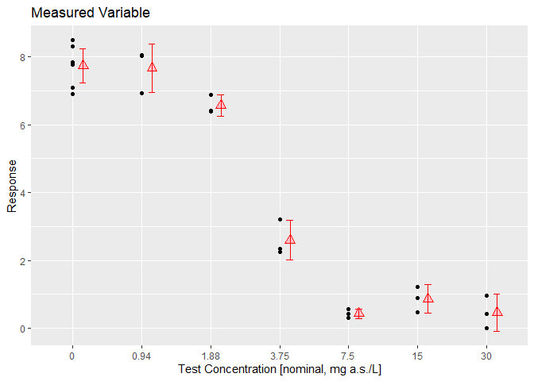
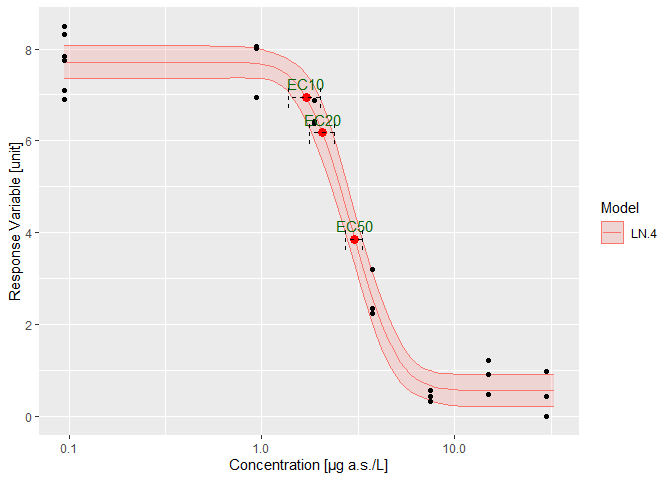

The goal of drcHelper is to assist with routine dose-response analysis by providing a collection of helper functions and standalone functions that are generic and may be useful beyond our organization.
As part of the GLP stat pilot project, this package serves as a cornerstone for the second use case, EFX Statistics. It will streamline GLP statistical analyses for various dose-response studies and test assays within our registration data package. This ensures that the analyses remain current, state-of-the-art, and flexible enough to adapt to new regulatory requirements while complying with GLP standards.
The package also includes test cases and examples to help the regulatory statistical community understand the reasons behind different outcomes. For instance, point estimations and p-values may vary depending on the parties involved, the functions used, or the packages selected. It aims to promote a harmonized understanding of methodologies and provide a foundation for standardized practices in the regulatory statistics field for plant protection product registration. Additionally, it is hoped that this project will contribute to the ongoing OECD 54 revision process.
Some of the functions are adapted from archived packages or single functions of a bigger package so that the loaded namespace is not too big for small calculations. Some of the functions are included for testing and validation purposes. All third-party code with a different license are specified in the relevant source files with the license name and the relevant copyright texts.
This package is open source, and any contributions or improvements, especially on the documentation side, are welcome.
Please note that the documentation website for this package is currently under development. Some articles are still placeholders, and many more are on the way. However, the ongoing development of the website does not impact the usage of this R package.
Installation
You can install the development version of drcHelper from GitHub with:
# install.packages("devtools")
devtools::install_github("Bayer-Group/drcHelper")or
# install.packages("pak")
pak::pak("Bayer-Group/drcHelper")Preliminary Summary
data("dat_medium")
dat_medium <- dat_medium %>% mutate(Treatment=factor(Dose,levels=unique(Dose)))
dat_medium$Response[dat_medium$Response < 0] <- 0
prelimPlot3(dat_medium)
prelimSummary(dat_medium) %>% knitr::kable(.,digits = 3)| Dose | Mean | SD | % Inhibition | CV |
|---|---|---|---|---|
| 0.00 | 7.736 | 0.635 | 0.000 | 8.203 |
| 0.94 | 7.669 | 0.633 | 0.858 | 8.259 |
| 1.88 | 6.563 | 0.275 | 15.161 | 4.197 |
| 3.75 | 2.596 | 0.524 | 66.440 | 20.175 |
| 7.50 | 0.429 | 0.128 | 94.456 | 29.865 |
| 15.00 | 0.859 | 0.372 | 88.892 | 43.296 |
| 30.00 | 0.465 | 0.485 | 93.984 | 104.162 |
Fitting multiple models and rank them.
mod <- drm(Response~Dose,data=dat_medium,fct=LL.3())
fctList <- list(LN.4(),LL.4(),W1.3(),LL2.2())
# plot(mod,type="all")
res <- mselect.plus(mod,fctList = fctList )
modList <- res$modList
res$Comparison
#> logLik IC Lack of fit Res var
#> LN.4 -15.45496 40.90992 5.893537e-01 0.2547068
#> LL.4 -15.69685 41.39370 5.180082e-01 0.2598931
#> LL.3 -19.24379 46.48759 6.848925e-02 0.3326394
#> W1.3 -20.55410 49.10820 4.800972e-02 0.3710183
#> LL2.2 -70.79793 147.59586 8.398391e-17 23.3118491
drcCompare(modRes=res)
#> logLik IC Lack of fit Res var Certainty_Protection
#> LN.4 -15.45496 40.90992 5.893537e-01 0.2547068 High
#> LL.4 -15.69685 41.39370 5.180082e-01 0.2598931 High
#> LL.3 -19.24379 46.48759 6.848925e-02 0.3326394 High
#> W1.3 -20.55410 49.10820 4.800972e-02 0.3710183 Medium
#> LL2.2 -70.79793 147.59586 8.398391e-17 23.3118491 Low
#> Steepness No Effect p-val
#> LN.4 Medium 0
#> LL.4 Medium 0
#> LL.3 Medium 0
#> W1.3 Medium 0
#> LL2.2 Steep 1
library(purrr)
edResTab <- mselect.ED(modList = modList,respLev = c(10,20,50),trend="Decrease",CI="inv")
edResTab
#> .id Estimate Std. Error Lower Upper NW Rating EC
#> 1 LN.4 1.699273 NA 1.464617 1.990240 0.3093219 Good EC 10
#> 2 LN.4 2.067034 NA 1.817202 2.321445 0.2439457 Good EC 20
#> 3 LN.4 3.034117 NA 2.785528 3.283618 0.1641632 Excellent EC 50
#> 4 LL.4 1.680896 NA 1.421435 2.018155 0.3550014 Good EC 10
#> 5 LL.4 2.084252 NA 1.812372 2.371154 0.2680974 Good EC 20
#> 6 LL.4 3.040373 NA 2.770313 3.299156 0.1739402 Excellent EC 50
#> 7 LL.3 1.577783 NA 1.284085 1.961887 0.4295911 Good EC 10
#> 8 LL.3 2.019241 NA 1.705807 2.342361 0.3152440 Good EC 20
#> 9 LL.3 3.078550 NA 2.783875 3.366535 0.1892644 Excellent EC 50
#> 10 W1.3 1.588627 NA 1.207649 2.091723 0.5565024 Fair EC 10
#> 11 W1.3 2.092288 NA 1.686784 2.491398 0.3845617 Good EC 20
#> 12 W1.3 3.171479 NA 2.861093 3.436843 0.1815399 Excellent EC 50
#> 13 LL2.2 NA NA NA NA NA Not defined EC 10
#> 14 LL2.2 NA NA NA NA NA Not defined EC 20
#> 15 LL2.2 NA NA NA NA NA Not defined EC 50Adding ECx and ECx CI’s to the plots
p1 <- plot.modList(modList[1])
addECxCI(p1,object=modList[[1]],EDres=NULL,trend="Decrease",endpoint="EC", respLev=c(10,20,50),
textAjust.x=0.01,textAjust.y=0.3,useObsCtr=FALSE,d0=NULL,textsize = 4,lineheight = 0.5,xmin=0.012)+ ylab("Response Variable [unit]") + xlab("Concentration [µg a.s./L]")
## addECxCI(p)Report ECx
resED <- t(edResTab[1:3, c(2,4,5,6)])
colnames(resED) <- paste("EC", c(10,20,50))
knitr::kable(resED,caption = "Response Variable at day N",digits = 3)| EC 10 | EC 20 | EC 50 | |
|---|---|---|---|
| Estimate | 1.699 | 2.067 | 3.034 |
| Lower | 1.465 | 1.817 | 2.786 |
| Upper | 1.990 | 2.321 | 3.284 |
| NW | 0.309 | 0.244 | 0.164 |
Response Variable at day N
Calculate specific ECx:
mod <-modList[[1]]
edres <- ED.plus(mod,c(5,10,20,50),trend="Decrease")
edres%>%knitr::kable(.,digits = 3)| Estimate | Std. Error | Lower | Upper | |
|---|---|---|---|---|
| EC 5 | 1.447 | 0.163 | 1.107 | 1.787 |
| EC 10 | 1.699 | 0.159 | 1.367 | 2.032 |
| EC 20 | 2.067 | 0.151 | 1.753 | 2.382 |
| EC 50 | 3.034 | 0.152 | 2.716 | 3.352 |
Model Output
| Estimate | Std. Error | t-value | p-value | |
|---|---|---|---|---|
| b:(Intercept) | -2.300 | 0.309 | -7.441 | 0.000 |
| c:(Intercept) | 0.532 | 0.177 | 3.005 | 0.007 |
| d:(Intercept) | 7.719 | 0.174 | 44.474 | 0.000 |
| e:(Intercept) | 2.914 | 0.148 | 19.750 | 0.000 |
Contribution Notes
- Please create a pull request to contribute to the development of packages. Note that source branch is the branch you are currently working on when you run the
gh pr createcommand.
gh pr create --title "Title of the pull request" --body "Description of the pull request"
gh pr create --title "Title of the pull request" --body "Description of the pull request" --base developTo use the pkgdown github workflow, some of the vignettes need to be pre-knit before pushing to the remote github repository if extra packages are needed and you don’s want to add those to the workflow. An example is given below.
knitr::knit("vignettes/drcHelper.Rmd.orig", output = "vignettes/drcHelper.Rmd",fi)Acknowledgements
The work is supported by Bayer Environment Effects team members, especially by Andreas Solga and Daniela Jans. The Mesocosm colleagues Sarah Baumert and Harald Schulz have supported the verification and validation with extensive examples and scripts and SAS / VB validated calculations.